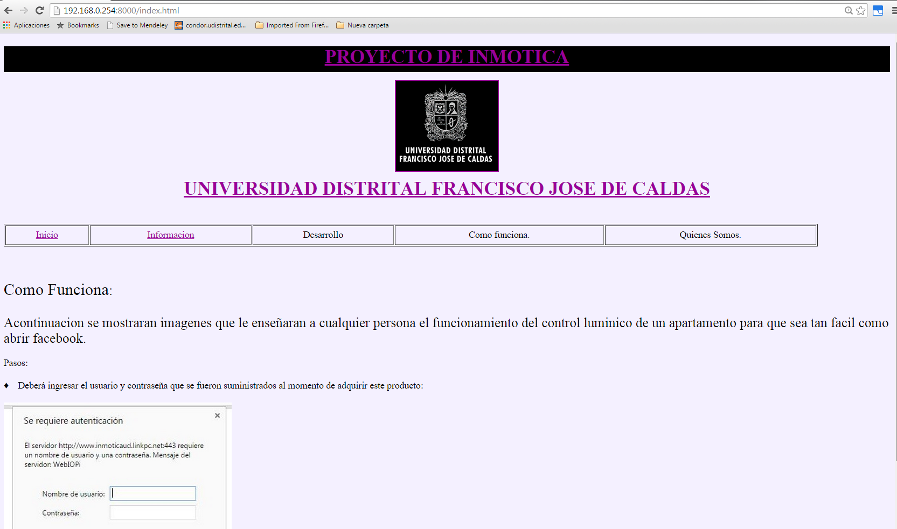
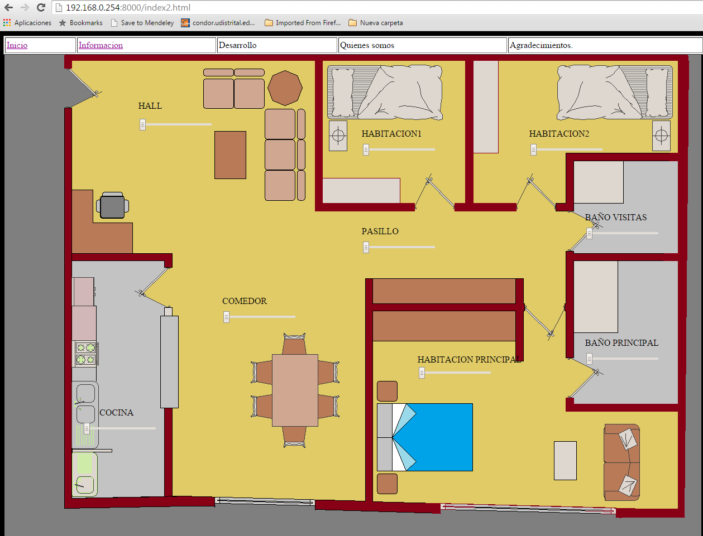
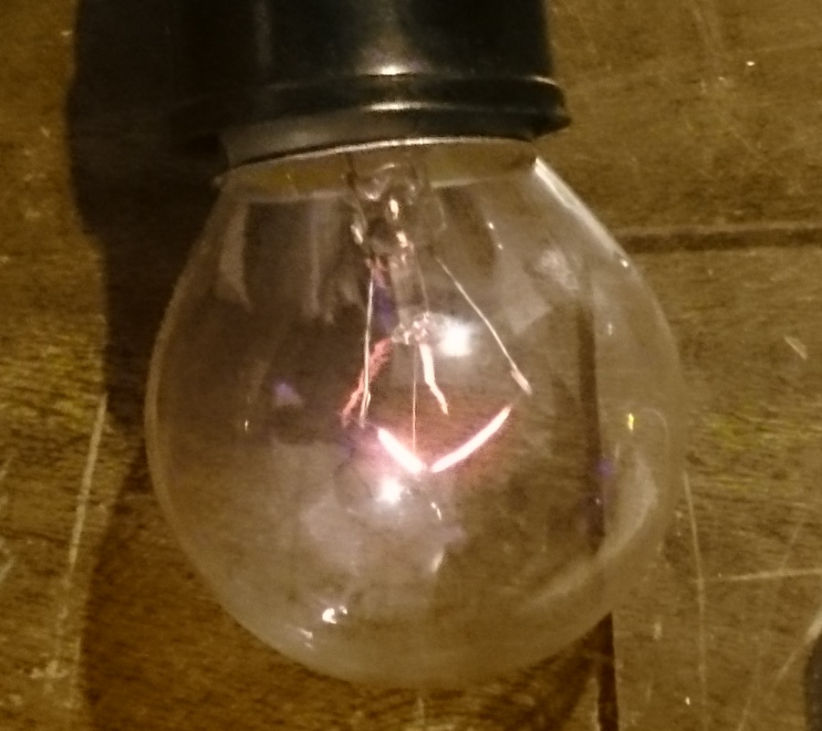
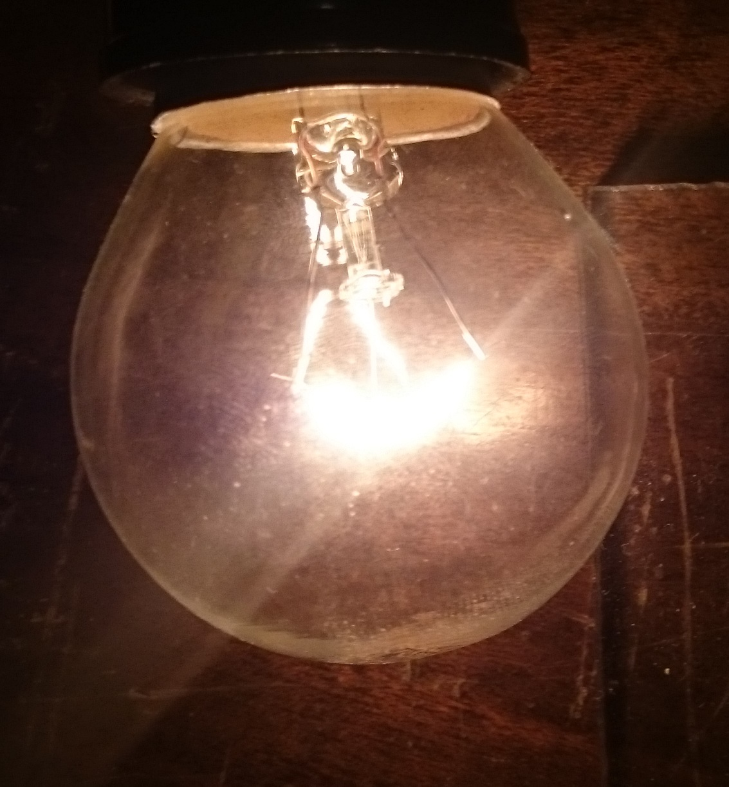

PROYECTO DE INMOTICA

UNIVERSIDAD DISTRITAL FRANCISCO JOSE DE CALDAS
| Inicio | Informacion | Desarrollo | Como funciona. | Quienes Somos. |
"PROTOTIPO DE AUTOMATIZACI”N DOM”TICA DEL SISTEMA DE ILUMINACI”N DE UNA CASA MEDIANTE COMUNICACIONES VÕA INTERNET."
BIENVENIDOS
Como Funciona:
Acontinuacion se mostraran imagenes que le enseÒaran a cualquier persona el funcionamiento del control luminico de un apartamento para que sea tan facil como abrir facebook.
Pasos:
♦ Deber· ingresar el usuario y contraseÒa que se fueron suministrados al momento de adquirir este producto:
{kind=link}
♦ Una vez haya accedido, vera una pagina con varias opciones, cada una contiene informacion del desarrollo, desarrolladores, agradecimientos, etc.

♦ Puede navegar libremente por la pagina, sin embargo, para el proyecto se encuentra en el link que dice desarrollo.

♦
Una vez allÌ, usted vera el diseÒo personalisado de su hogar, donde en
el plano vera identicamente si casa tal cual usted la conoce, en cada
cuarto ver· una barra deslisable de lado a lado.
Si usted desliza por ejemplo el "HALL" totalmente a la izquierda, el bombillo estara completamente apagado, a medida que lo vaya deslizando a la derecha, el bombillo se ira encendiendo hasta quedar completamente encendido.
♦ Usted tendra la autonomia de desidir que hacer y como hacer el manejo de esta sencilla aplicacion.
Si usted desliza por ejemplo el "HALL" totalmente a la izquierda, el bombillo estara completamente apagado, a medida que lo vaya deslizando a la derecha, el bombillo se ira encendiendo hasta quedar completamente encendido.


♦ Usted tendra la autonomia de desidir que hacer y como hacer el manejo de esta sencilla aplicacion.